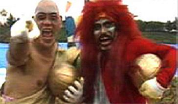

Humor Amarillo
 De: La Frikipedia, la enciclopedia extremadamente seria.
De: La Frikipedia, la enciclopedia extremadamente seria.

|
Este artículo necesita ser ilustrado. Busca una afoto en nuestro depósito de imágenes o donde sea y ponla, pero que no sea pr0n, que se cabrea el señor del adSense y nos corta el grifo de los dólare. Y sin dólare no hay servidor...
|
 Juanito Calvicie y Paco Peluca
Es el programa DAI PRISA, tuvieron los cojones bien puestos para volverla a emitir y con esos dobladores tan pecadores.
Su presentador Takeshi Kitano, director de cine, ex-yakuza y pintor (por lo que tengo entendido XD),es mi ídolo; un tío auténtico, un dios que controla los destinos de los participantes como si fuesen playmovils, si pudiese volver a 1986 me iba a Japón y me apuntaba al programa,(si alguien inventa la maquina del tiempo que avise que yo quiero ir)...
Pruebas más conocidas
El programa está dividido en varias pruebas:
|
- La Pequeña Muralla China
- El laberinto del chinotauro
- Besando al bollo
- Los cañones de Nakasone
- Las zamburguesas
- Alguien voló sobre el nido del chino
- Terremoto en Yamamoto
- Las puertas del pánico
- Surfeando en la tabla de planchar
- Los rollitos de primavera
- El escondite japonés
- Las cartas
- Los Bolos
- El béisbol
|
- El gran palillo
- El montruo de la laguna sucia
- El circuito de Hirohito
- El karaoke
- El rugbi de las cobras.
- Líete tú de la liana.
- El pinball mortal.
- El tazón deslizante (dombrá-dombrá-dombrá...).
- Con sumo gusto (también llamado Pressing Sumo).
- La samba de Jamamba o alguna tontería sí.
- Culito contra culito.
- Cantando con los mafiosos.
- El teto
|
En resumen, es un clásico de mi niñez, un programa para toda la familia, viendo como se desgracian esos pobres diablos masoquistas aún te echas las risas.
Personajes de Humor Amarillo
Mentes y colaboradores principales
- Takeshi
- Primo Mario (super Mario bros al servicio de su majestad)
- Junior (asistente, pupilo y amante de Takeshi)
- Mini-Takeshi (cabezudo de feria suplente de Kitano)
- Tía de Takeshi (clara encubridora de la nueva era friki)
- General Tani (el Ramón García japonés, después de dar un discurso a los concursantes sobre las enseñanzas que un viejo monje Shaolín le transmitió solía gritar: AL TURROOOOOOOOOOÓN!!!!!!!!!!!)
Esbirros
- Dúo / Trío / Cuarteto Pirata (Comando Gay)
- El Dúo Pirata (dos sarasas que gustan de cantar algo llamado Dombrá-dombrá-dombrá)
- Pinky Winky (locaza de rosa)
- Chupy (sargento de la misma era), travesti aka Muchahontas (una india ninfómana a la que le encanta enseñar las bragas)
- Juanito Calvicie (enemigo de los peines y fan de la era friki por excelencia)
- Paco Peluca (fue expulsado de la era friki por intentar poner una desastrosa tienda de pelucas, era su plan para dominar el mundo)
- Animal (es el espia norteamericano infiltrado entre las tropas de Takeshi, sobornado por éste. Tremendamente parecido a Pau Gasol)
- El monstruo de la laguna sucia (hornswoggle personal de Juanito)
Concursantes (los futuros habitantes de la nueva era friki)
- El Chino Cudeiro (el líder de la era friki) (en chino:メボぼそ ぞたぁあぃ)
- La China Cudeira
- La Familia Cudeiro
- La Ballena Cudeira
- El Chinorri Cudeiro
- Yoshiro Sobrasada (concursante pesada y aspirante a presidenta de la nueva era)
- Gacela Thompson (concursante legendario que se estrelló contra la pequeña muralla china, su hazaña será recordada por los siglos de los siglos)
- Tu
Presentadores y colaboradores
Los comentaristas de este programa son gente entregada. Hasta en 2D trabajan.
- Dolores Conichiguá (Doña Rogelia japonesa con grito de guerra: ¡¡¡Dadles caña!!!)
- Pepe Livingston (debe pronunciarse "liniston")
- Pepe Livingston II (un personaje entrañable; él y su carabana)
- El triste (
pringao suplente de Pepe livingston en el 5º y 11º capitulo)
Otros personajes
- El primo de Harry Potter (sin comentarios, triste...)
- La señora (Promotora intenacional de la era friki)
- Rubio de bote (chocho more... bueno dejemoslo)
- Grano de café gigante (personaje frecuente de "con sumo gusto" que tiene propensión a recibir palizas de los concursantes).
- Pequeño samurái (guerrero de la era mencionada por excelencia)
- El primo divertido de King-Kong
- Jorja Woman, rocking down the street...
En realidad, tras la apariencia de un concurso y un programa para reírse de los atrevidos que hacen animaladas sin perder la compostura se esconde un plan maestro ideado por Takeshi Kitano, Hulk Hogan y un grupo selecto de domo-kun para dominar el mundo. El programa tiene como objetivo primordial, formar un cuerpo militar de élite que sea capaz de resistir a las más peligrosas misiones, y aguantar lo que le echen, incluso las armas de destrucción masiva más destructivas. Los que llegan al final del programa son condecorados, y han demostrado ser seres no pensantes sino sólamente obedientes, y son transportados a la base secreta de la organización que preside Takeshi para completar el entrenamiento. Se desconoce cuándo y donde empezarán el ataque que les llevará a la conquista del mundo (o al menos a intentarlo), pero los más intrépidos agentes secretos no cesan en su empeño de detener tal maniobra de dominación mundial.
Este plan fue frustrado por un personaje de gran importancia mundial, el gran dios Pinki Winky, a Juanito Calvicie conquistó él mismo el mundo.
Autor(es):
- Krusher
- Nexo
- Doctor grijander
- MURO DE AGUAS
- Tropi
- Frikiman
- Roms
- Bazuke
- Dorian
- Josito
Frikipedia 2005-2016, Licencia
GFDL 1.2 - Extraído por FrikiLeaks